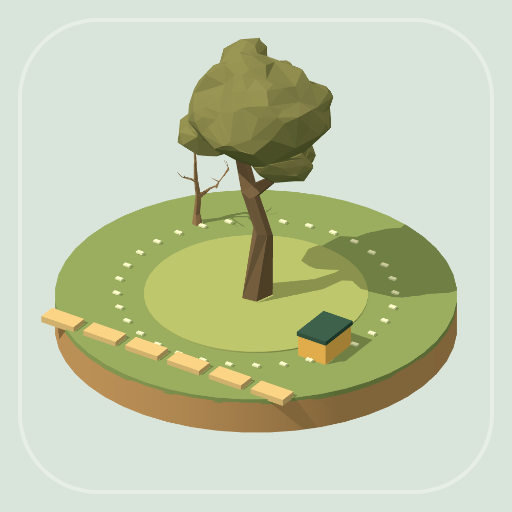

<- all projects

Canopy Crew
PC
Volume
Live
Inspect the crown, plan your cuts and keep the nest safe.
A storm has left Bellweather's trees tangled and its park closed. Join a retired caretaker, build a small arborist crew and bring the town's canopy back, one careful cut at a time. Take on 60 pruning contracts across five chapters of a small-town story. Read each crown: amber limbs must go, while healthy limbs and bird nests must stay. Plan the order, because an upper limb falls with the lower limb beneath it unless you use a rope. Preview a cutting order, undo a cut, upgrade your pruner, rope kit and habitat knowledge, and replay contracts for better medals.